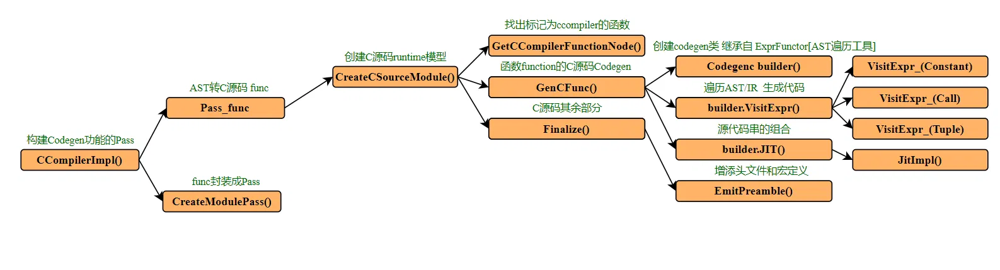

# 前言
本篇介绍外部编译器：C 语言编译器 ccompiler 是什么。
一些拓展链接。如果想多了解一些编译相关的内容，提高对 relay IR 的理解，可以学习 《【编译器】使用 llvm 编译自定义语言【1】构建 AST》，《【TVM】通过代码学习编译流程【2】模型转换》，《【编译器】使用 llvm 编译自定义语言【3】编译 object》，《My First Language Frontend with LLVM Tutorial》 等。想了解更多 TVM，可以阅读《深度学习编译器 TVM 代码串讲》。
作为初学者，错误在所难免，还望不吝赐教。
# 例子
如何编译 TVM，可以参考文章 [【TVM】通过代码学习编译流程【1】必要知识](https://forcheetah.github.io/2024/10/10/tvm01/）中的编译部分。本文默认读者已经能够编译和使用 TVM。
TVM 的外部编译器例子: ccompiler 是一个简单的、仅支持 + - * 运算的、编译为 C 源码的外部编译器。
先看看 TVM 对 ccompiler 编译器的注册。位于 src/relay/backend/contrib/codegen_c/target.cc 。
TVM 在这里注册了能够生成 C 源码，供本地 C 编译器编译的外部 CodeGen ccompiler。而交由 ccompiler 编译的函数需要被标记为 Primitive 和 Compiler=ccompiler ， Primitive 是告诉编译器该函数是原始不可分割的，relay 阶段不要分解和优化。 Compiler=ccompiler 是指定 CodeGen 为 ccompiler。
/*! | |
* \brief This demonstration external codegen target emits C/C++ for compilation by the native c | |
* compiler on CPU. | |
* - Patterns: None, functions must be explicitly marked as "Primitive" and "Compiler=ccompiler". | |
* - Custom compiler: relay/backend/contrib/codegen_c/codegen.cc | |
*/ | |
TVM_REGISTER_TARGET_KIND("ccompiler", kDLCPU) | |
.set_attr<Bool>(tvm::attr::kIsExternalCodegen, Bool(true)) | |
.set_attr<relay::transform::FTVMRelayToTIR>(tvm::attr::kRelayToTIR, CCompilerPass()) | |
// Value is prepended to every output CModule. | |
.add_attr_option<String>("header", String("")); |
接下来用一个简单的例子调用 ccompiler 生成 C 语言，并编译和执行。
import tvm | |
import numpy as np | |
from tvm import relay | |
import os | |
from tvm.contrib import graph_executor | |
from collections import OrderedDict | |
def update_lib(lib): # lib : llvmModuleNode ret_.mod | |
kwargs = {} | |
kwargs["options"] = ["-O2", "-std=c++17"] | |
tmp_path = "/home/xianmu/temp/repare_test/" | |
lib_name = "lib.so" | |
lib_path = os.path.join(tmp_path, lib_name) | |
lib.export_library(lib_path, fcompile=False, workspace_dir='/home/user/tempworkspace', **kwargs) | |
lib = tvm.runtime.load_module(lib_path) | |
return lib | |
def set_external_func_attr(func, compiler, ext_symbol): | |
func = func.with_attr("Primitive", tvm.tir.IntImm("int32", 1)) | |
func = func.with_attr("Compiler", compiler) | |
func = func.with_attr("global_symbol", ext_symbol) | |
return func | |
def prepare_graph_lib(base_path): | |
x = relay.var("x", shape=(5, 5), dtype="float32") | |
y = relay.var("y", shape=(5, 5), dtype="float32") | |
x0 = relay.var("x0", shape=(5, 5), dtype="float32") | |
y0 = relay.var("y0", shape=(5, 5), dtype="float32") | |
params = {"y0": np.ones((5, 5), dtype="float32")} | |
f = relay.Function([x0, y0], x0 * (x0 + y0) - y0) | |
f = set_external_func_attr(f, "ccompiler", "ccompiler_01") # 添加 `Primitive` 和 `Compiler=ccompiler` 标记 | |
call = relay.Call(f, [x, y]) | |
mod = tvm.IRModule.from_expr(call) | |
print("----------------------------------------------") | |
print(mod.script()) | |
print("----------------------------------------------") | |
# 编译 Relay->TIR | |
target = tvm.target.Target("llvm") | |
with tvm.transform.PassContext(opt_level=3): | |
compiled_lib = relay.build(mod, target, params=params) # const_loader | |
print("=======================================================================================================") | |
device = tvm.cpu() | |
lib = update_lib(compiled_lib.get_lib()) | |
rt_mod = tvm.contrib.graph_executor.create(compiled_lib.get_executor_config(), lib, device) # runtime_mod 图执行器 | |
# 模型执行 | |
x_data = np.random.rand(5, 5).astype("float32") | |
y_data = np.random.rand(5, 5).astype("float32") | |
inputs = OrderedDict([ | |
("y", y_data), | |
("x", x_data), | |
]) | |
for name, data in inputs.items(): | |
rt_mod.set_input(name, data) | |
rt_mod.run() | |
out = tvm.nd.empty((5, 5), device=device) | |
out = rt_mod.get_output(0, out) | |
# 保存模型 | |
dylib_path = os.path.join(base_path, "test_ccompiler.so") | |
compiled_lib.get_lib().export_library(dylib_path) | |
if __name__ == "__main__": | |
curr_path = "/home/xianmu/temp/repare_test/" | |
os.environ["TVM_HOME"] = "/home/xianmu/TVM/tvm/" | |
prepare_graph_lib(curr_path) |
这段代码使用 relay 语言搭建了仅包含加减乘的模型 x*(x+y)-y ，并对其进行编译和调用执行。
可以看到 set_external_func_attr() 函数为模型添加 Primitive 和 Compiler=ccompiler 标记，以告知 TVM 模型中的该函数使用 ccompiler 生成 code。
以下是打印模型:
def @main(%x: Tensor[(5, 5), float32], %y: Tensor[(5, 5), float32]) { | |
%2 = fn (%x0: Tensor[(5, 5), float32], %y0: Tensor[(5, 5), float32], Primitive=1, Compiler="ccompiler", global_symbol="ccompiler_01") { | |
%0 = add(%x0, %y0); | |
%1 = multiply(%x0, %0); | |
subtract(%1, %y0) | |
}; | |
%2(%x, %y) | |
} |
根据我们构建的模型，输出是个 5*5 的 tensor，不过由于输入都是随机的，所以每次结果也不一样。
************** result ************** | |
[[-0.2741713 0.08935148 -0.04881942 -0.02653596 0.6241337 ] | |
[ 0.6122713 -0.62298256 0.68201226 0.37773138 -0.4962681 ] | |
[-0.5679778 0.28375486 0.38151044 -0.41397965 -0.3218666 ] | |
[-0.24529386 -0.4346298 -0.10323387 -0.6108544 -0.22057068] | |
[-0.44894195 0.16438246 -0.47126824 0.546167 -0.8994445 ]] |
# ccompiler
我们直接从 ccompiler 的 Codegen 结果来了解 ccompiler 这个编译器。
编译过程中如果没有指定工作空间，TVM 会创建临时空间存放生成的 C 源码，并在用完之后释放掉临时空间。为了看到 ccompiler 生成的 C 源码，需要指定工作空间，即上述 Python 例子中：
lib.export_library(lib_path, fcompile=False, workspace_dir='/home/user/tempworkspace', **kwargs) |
工作空间下有三个生成文件： lib0.c 、 lib1.o 、 devc.o
其中 lib1.o 由 ConstLoaderModule 生成，可能用于常量的加载。
devc.o 和后端指定为 llvm 这种设备有关。
lib0.c 就是 ccompiler 生成的 C 源码：
#include <stdio.h> // 从 1 到 23 行是固定输出代码（头文件和宏定义） | |
#include <stdlib.h> | |
#include <string.h> | |
#include <tvm/runtime/c_runtime_api.h> | |
#include <tvm/runtime/c_backend_api.h> | |
#define CSOURCE_BINARY_OP_1D(p_ID_, p_OP_, p_DIM1_, p_DTYPE) \ | |
void p_ID_(p_DTYPE* a, p_DTYPE* b, p_DTYPE* out) { \ | |
for (int64_t i = 0; i < p_DIM1_; ++i) { \ | |
out[i] = a[i] p_OP_ b[i]; \ | |
} \ | |
} | |
#define CSOURCE_BINARY_OP_2D(p_ID_, p_OP_, p_DIM1_, p_DIM2_, p_DTYPE) \ | |
void p_ID_(p_DTYPE* a, p_DTYPE* b, p_DTYPE* out) { \ | |
for (int64_t i = 0; i < p_DIM1_; ++i) { \ | |
for (int64_t j = 0; j < p_DIM2_; ++j) { \ | |
int64_t k = i * p_DIM2_ + j; \ | |
out[k] = a[k] p_OP_ b[k]; \ | |
} \ | |
} \ | |
} | |
CSOURCE_BINARY_OP_2D(ccompiler_01_0, -, 5, 5, float); // 根据AST生成所有Call调用的函数 | |
CSOURCE_BINARY_OP_2D(ccompiler_01_1, *, 5, 5, float); | |
CSOURCE_BINARY_OP_2D(ccompiler_01_2, +, 5, 5, float); | |
void ccompiler_01_(float* x0, float* y0, float* out0) { // 执行过程 | |
float* buf_0 = (float*)malloc(4 * 25); | |
float* buf_1 = (float*)malloc(4 * 25); | |
float* buf_2 = (float*)malloc(4 * 25); | |
ccompiler_01_2(x0, y0, buf_0); // 依次调用函数 | |
ccompiler_01_1(x0, buf_0, buf_1); | |
ccompiler_01_0(buf_1, y0, buf_2); | |
memcpy(out0, buf_2, 4 * 25); | |
free(buf_0); | |
free(buf_1); | |
free(buf_2); | |
} | |
int ccompiler_01_wrapper_(DLTensor* arg0, // 函数封装 | |
DLTensor* arg1, | |
DLTensor* out0) { | |
ccompiler_01_((float*)(arg0->data), | |
(float*)(arg1->data), | |
(float*)(out0->data)); | |
return 0; | |
} | |
#ifdef __cplusplus | |
extern "C" { | |
#endif | |
TVM_DLL int32_t ccompiler_01(TVMValue* args, int* type_code, int num_args, TVMValue* out_value, int* out_type_code) { | |
DLTensor* arg0 = (DLTensor*)(((TVMValue*)args)[0].v_handle); | |
DLTensor* arg1 = (DLTensor*)(((TVMValue*)args)[1].v_handle); | |
DLTensor* ret2 = (DLTensor*)(((TVMValue*)args)[2].v_handle); | |
ccompiler_01_wrapper_(arg0,arg1,ret2); | |
return 0; | |
} | |
#ifdef __cplusplus | |
} | |
#endif |
以上就是 ccompiler 编译器根据我们模型而生成的 C 源码。接下来结合 x*(x+y)-y 模型生成的 C 源码学习一下 ccompiler 代码：

ccompiler 代码主要位于 src/relay/backend/contrib/codegen_c/codegen.cc ，它由函数 CCompilerImpl() 封装成一个 Pass 。
从这个流程图中可以知道这个 pass 主要功能位于 builder.VisitExpr() 函数，它通过遍历抽象语法树 AST/Relay IR，生成 C 语言代码字符串。这个类是 CodegenC ，它继承自 TVM 提供的 AST/IR 遍历工具类 ExprFunctor 。
我们知道遍历抽象语法树是编译器最基本的功能，为了方便，TVM 已经提供了用于遍历的工具类 ExprFunctor ，它主要提供了 VisitExpr 接口，并根据 Expr 的具体类型转发到对应的 VisitExpr_ 。我们只需要继承 ExprFunctor ，并重写 Expr 对应的 VisitExpr_ 方法，就可以方便得实现特定 Expr 的访问、修改等。大家可以阅读《深度学习编译器 TVM 代码串讲》以了解更多。
再回到 ccompiler 编译器，其最主要重写的方法是 VisitExpr_(const CallNode* call) ，也就是将调用 Call 生成对应的 C 源代码。
std::vector<Output> VisitExpr_(const CallNode* call) override { | |
std::ostringstream macro_stream; | |
std::ostringstream decl_stream; | |
std::ostringstream buf_stream; | |
std::string func_name = ext_func_id_ + "_" + std::to_string(func_idx++); | |
// Make function declaration | |
macro_stream << "CSOURCE_BINARY_OP_" << call->args.size() << "D(" << func_name << ", "; // 生成函数 CSOURCE_BINARY_OP_2D (ccompiler_01_0, -, 5, 5, float); | |
if (backend::IsOp(call, "add")) { | |
macro_stream << "+"; | |
} else if (backend::IsOp(call, "subtract")) { | |
macro_stream << "-"; | |
} else if (backend::IsOp(call, "multiply")) { | |
macro_stream << "*"; | |
} else { | |
LOG(FATAL) << "Unrecognized op"; | |
} | |
auto in_shape = backend::GetShape(call->args[0]->checked_type()); | |
for (size_t i = 0; i < in_shape.size(); ++i) { | |
macro_stream << ", " << in_shape[i]; | |
} | |
const auto* type_node = call->checked_type().as<TensorTypeNode>(); | |
ICHECK(type_node); | |
const auto& dtype = GetDtypeString(type_node); | |
macro_stream << ", " << dtype; | |
macro_stream << ");"; | |
func_decl_.push_back(macro_stream.str()); | |
// Make function call when visiting arguments | |
bool first = true; // 生成函数调用：ccompiler_01_2 (x0, y0, buf_0); | |
decl_stream << func_name << "("; | |
for (size_t i = 0; i < call->args.size(); ++i) { | |
auto res = VisitExpr(call->args[i]); | |
for (auto out : res) { | |
if (!first) { | |
decl_stream << ", "; | |
} | |
first = false; | |
decl_stream << out.name; | |
} | |
} | |
std::string out = "buf_" + std::to_string(buf_idx_++); // 生成内存分配 ： float* buf_0 = (float*) malloc (4 * 25); | |
auto out_shape = backend::GetShape(call->checked_type()); | |
int out_size = 1; | |
for (size_t i = 0; i < out_shape.size(); ++i) { | |
out_size *= out_shape[i]; | |
} | |
buf_stream << dtype << "* " << out << " = (" << dtype << "*)malloc(4 * " << out_size << ");"; | |
buf_decl_.push_back(buf_stream.str()); | |
decl_stream << ", " << out << ");"; | |
ext_func_body_.push_back(decl_stream.str()); | |
// Update output buffer | |
// Note C codegen only handles TensorType. Therefore, we don't flatten | |
// tuples and only return a single vaule. | |
Output output; | |
output.name = out; | |
output.dtype = dtype; | |
output.need_copy = true; | |
output.size = out_size; | |
return {output}; | |
} |
VisitExpr_(const CallNode* call) 函数只是将一些 C 源码字符串，分门别类地存储起来，后续会将其整合成完整的 C 源码。比如流程中 Finalize() 函数，添加了头文件宏定义等，并将所有的代码整合起来。
# 后续编译和执行
获得 lib0.c 、 lib1.o 、 devc.o 文件之后的流程：TVM 会生成如下指令，调用系统中的 C 语言编译器，将 lib0.c 、 lib1.o 、 devc.o 编译成动态库。可以见工程 python/tvm/runtime/module.py，函数 export_library() 结尾 fcompile() 函数调用的指令。
['/usr/bin/g++', '-shared', '-fPIC', '-o', '/home/user/tempworkspace/test_ccompiler.so', '/home/user/tempworkspace/lib0.c', '/home/user/tempworkspace/lib1.o', '/home/user/tempworkspace/devc.o', '-I/home/user/TVM/include', '-I/home/user/TVM/3rdparty/dlpack/include', '-I/home/user/TVM/3rdparty/dmlc-core/include'] |
之后 TVM 重新加载动态库，并执行，具体还是见文章开头的 Python 脚本。
# 后记
本博客目前以及可预期的将来都不会支持评论功能。各位大侠如若有指教和问题，可以在我的 github 项目 或随便一个项目下提出 issue，并指明哪一篇博客，我看到一定及时回复！